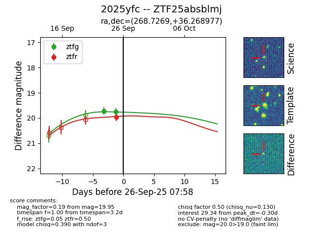
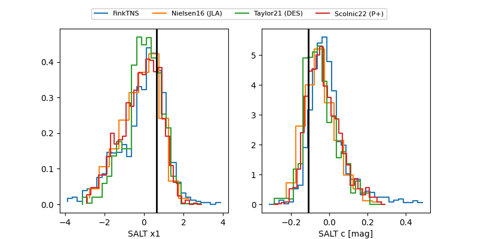

FINK: ZTF25absblmj
Lasair: ZTF25absblmj
ALeRCE: ZTF25absblmj
TNS: 2025yfc
YSE: 2025yfc
ZTF25absblmj (ztf,fink)
2025yfc (tns,yse)
equatorial (ra, dec) = (268.7269,+36.26898)
galactic (l, b) = (62.1192,+26.42025)


last ztfg=19.75, ztfr=19.95
2 ztfg, 1 ztfr detections